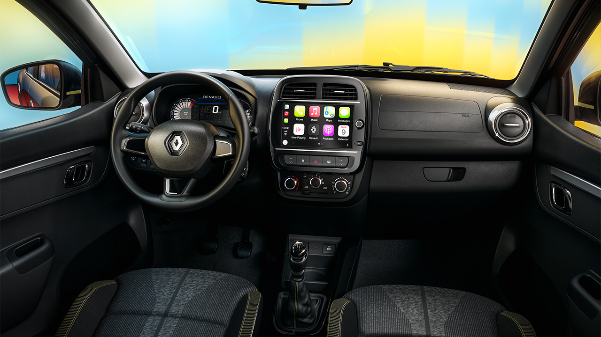

Compacto y atractivo para la vista, Renault Kwid sobresale con su diseño: gran distancia al suelo de 185mm, protección de la carrocería y protector plástico delantero. Además, destaca con su color gris cassiopée, adhesivos laterales y toques brillantes de amarillo citrón. El estilo urbano de las llantas oscurecidas de aleación de 14 pulgadas y las barras del techo le permiten estar listo para conquistar la ciudad.
TECNOLOGÍA A BORDO: Disfrutá tus aplicaciones favoritas en la pantalla multimedia de 8'' gracias a la replicación del teléfono inteligente compatible con Android Auto™ y Apple CarPlay™.
RENDIMIENTO Y EFICIENCIA: El motor del Renault Kwid combina rendimiento, facilidad de conducción y ahorro. Placer de conducción y bajo consumo destacan en el hábitat natural: la ciudad. Renault Kwid está equipado con un motor de 12 válvulas y tres cilindros SCe 1.0 que brinda 66 CV y 93 Nm de torque.
SISTEMA DE ASISTENCIA AL CONDUCTOR: Cuenta con cámara de visión trasera, sistema de monitoreo de presión de los neumáticos, sistema de frenado ABS, alerta de velocidad, cuatro airbags entre otras características de seguridad.
Galería de fotos

¿Querés más información?
Consultá sin compromiso y conocé todas las opciones de financiación del Renault Kwid.